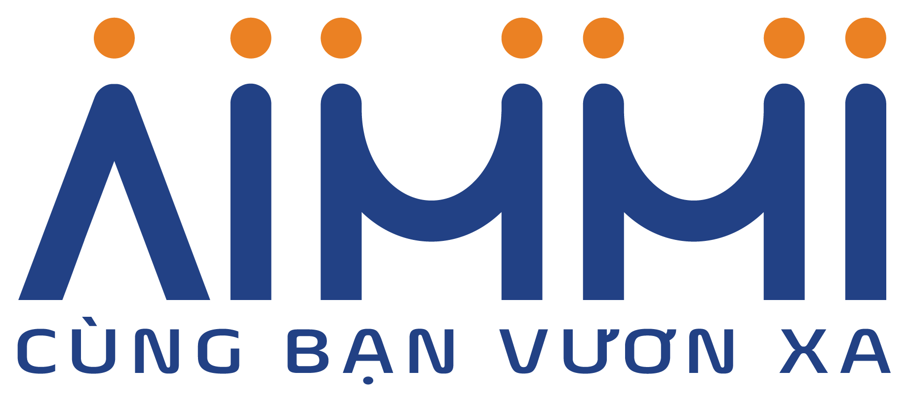

✔ Chosen: Theme 4 — the open dossier (signed off). The Phase C handover package lives in design/. Three organising principles, not three palettes. Each is applied to the same four screens — home (both widths), destination comparison, assessment question, assessment result. The result screen is the signature element in all three; everything around it stays quiet. ← Wireframes